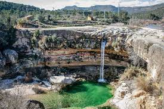
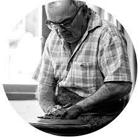

Op deze website kunt u informatie vinden over Miravet en ook leuke plekken om te bezoeken in de streek. Als u op de Locaties knop druk in het menu kunt de leukste plekken in de streek vinden! De locaties heb ik allenmaal persoonlijk bezocht en ik raad ze allenmaal zeer aan. Bij de locaties kunt u meer informatie lezen over wat daar allenmaal te doen is en wanneer deze plekken op zijn best zijn.
Het pitoresce dorpje Miravet is te vinden in Catalunya, Spanje. In de streek van dit prachtige dorp zijn een hoop dingen te doen. Ook is de streek rijk aan heel veel geschiedenis Het dorp heeft een prachtig kasteel wat uitkijkt over de rivier de Ebro. Miravet is een heel klein dorpje, het telt ongeveer 700 inwoners. De inwoners zijn over het algemeen aarbeiders die erg hard werken. De meest uitgevoerde arbeiden zijn potten bakken en op het land werken. De grootste pottenbakker is het dorp is Ceràmiques Ferran. Dit familie bedrijf is generaties lang aan het bakken.
